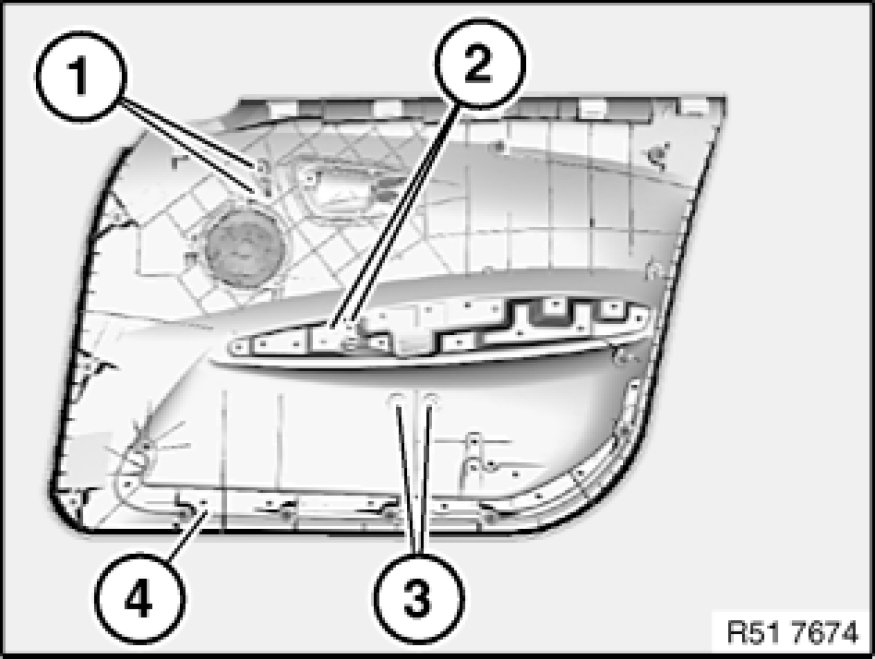
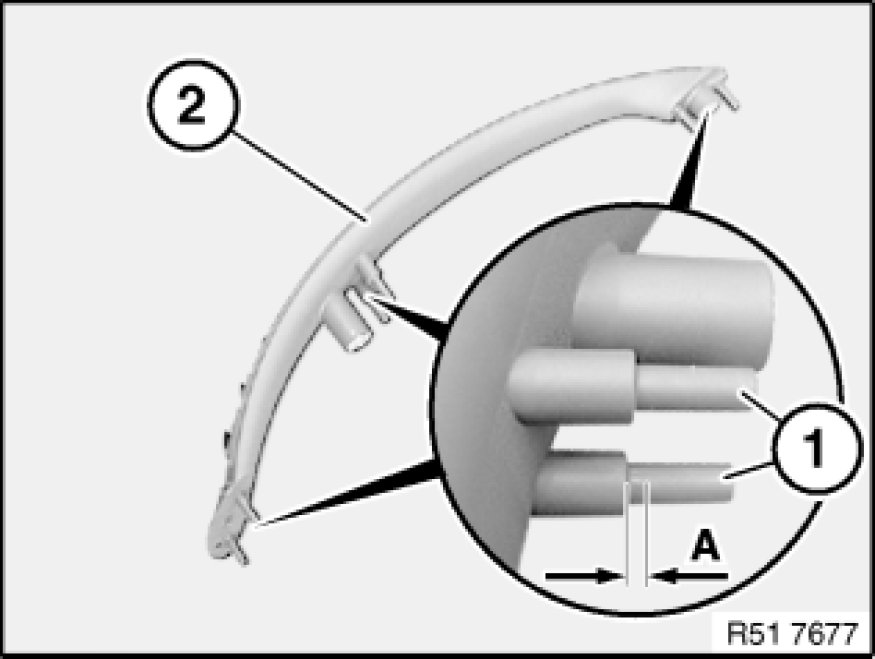
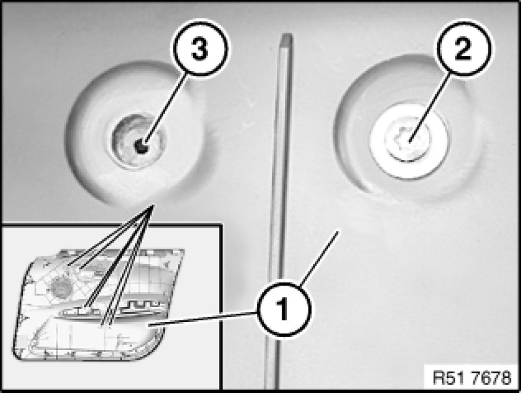

Removing and Installing or Replacing Door Handle on Door Trim Panel, Front Left
51 41 019 - Removing and installing or replacing door handle on door trim panel, front left or right

Necessary preliminary tasks:
- Remove front door trim panel Removing and Installing (Replacing) Front Left or Right Door Trim Panel

Important!
Risk of damage!
Only drill down to door trim panel area (4) so as not to damage the contact surface.
Drill out welding spots (1, 2 and 3) on door trim panel (4) with 8 mm dia. welding spot drill bit.
Remove welding residue from door trim panel (4) and door handle with a scalpel (for heavy-duty applications) if these components are to be reused.

Replacement:
Saw off welding pins (1) on door handle (2) down to measurement (A).
A= - 2.0 ± 0.5 mm

Installation:
Door handle:
- position in door trim panel (1)
- secure at top, middle and bottom with repair screws (2)
- align until bore (3) is centrally located
- tighten down, starting in middle
Tightening torque 51 41 3AZ Specifications.
Note:
If bores have not been correctly drilled through, increase tightening torque according in order to ensure that door handle is firmly seated.